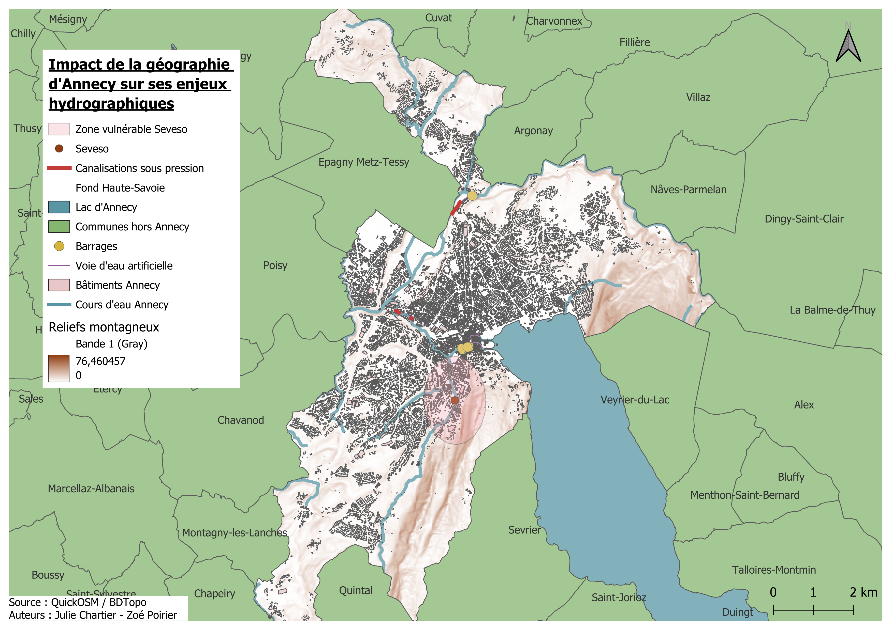

Ce travail se situe dans le contexte de l'UV SH40 - Les Risques : entre technique et société, dispensée à l'UTC par Johan Desbonnet. Il est disponible
en ligne
afin de faciliter l'accès à l'information au plus grand nombre.
Objectif : Représenter et analyser le risque dans un département
de notre choix.
Enjeu : Adopter une approche systémique afin de mettre en lien
les composantes du risque.
Processus :
Modéliser le risque dans le département à partir de ses composantes :
réalisation d'un Modèle Conceptuel de Données (MCD).
Représenter ce risque à différentes échelles :
réalisation de cartes à l'aide d'un Système d'Information
Géographique (SIG).
Caractériser l'accès à la donnée dans le contexte de la représentation
du risque d'un territoire :
analyse de la donnée utilisée ou manquante pour la réalisation du
travail.
Nous avons choisi de nous intéresser au département de la Haute-Savoie
premièrement car nous sommes toutes deux intéressées par le milieu
montagnard. En outre, la Haute-Savoie a des caractéristiques
géographiques et climatiques bien spécifiques. Située dans les Alpes
françaises, la région montagneuse avec des altitudes élevées, des
vallées et des pentes abruptes favorise de fait de nombreux risques
naturels. Elle est aussi concernée par le tourisme saisonnier pour les
sports d'hiver ce qui constitue une arrivée de population peu sensibles
aux risque du département en comparaison aux habitants.
Le département de la Haute-Savoie (74)
Région : Auvergne-Rhône-Alpes
Départements limitrophes : Ain (01), Savoie (73).
Pays limitrophes : Suisse, Italie.
Particularité : Département montagneux
Altitude minimum : 250m au-dessus du niveau de la mer.
(source : Wikipedia)
Point culminant : Le Mont-Blanc, 4806m au-dessus du niveau
de la mer. (source : Wikipedia)
Concerné par la
loi Montagne pour l'intégralité de son territoire
(Source : loimontagne.info)
Modèle conceptuel de données (MCD)
Les sources
Le Dossier Départemental des Risques Majeurs (édition 2022) est le
principal support sur lequel nous nous appuyons pour construire notre
MCD.
Choix des aléas
Le DDRM du département de la Haute-Savoie fait état des 17 aléas qui
impactent le territoire. Dans ce modèle conceptuel de données, nous
avons fait le choix de ne détailler (avec leurs attributs) que 6 aléas
clés : séisme, mouvement de terrain, inondation, avalanche, pollution,
glaciaire et périglaciaire. Ces aléas sont particulièrement spécifiques
au département, nous avons donc choisi de développer ceux-ci dans un
premier temps et de faire figurer ceux avec lesquels ils interagissent
mais de façon moins développée. Sans cette sélection, le modèle aurait
été surchargé et aurait empêché une bonne lisibilité et accessibilité.
Construction
Il est construit de manière à ce que toutes les parties du schéma
composent le risque : les aléas, les acteurs, la vulnérabilité, la
gestion du risque et la morphodynamique. Vous trouverez dans la plupart
d'entre elles les attributs qui les définissent dans le contexte de la
Haute-Savoie. Ce département fait face à de nombreux risques de part la
diversité de ses paysages (une morphodynamique aux nombreux paramètres :
pente, manteau neigeux, réseaux hydrographiques, etc.) et les
successions possibles des catastrophes. C'est pourquoi de nombreux liens
se croisent. Les aléas sont simplement catégorisés par types d'aléa
comme vu en cours et héritent des classes mères. Aussi, nous avons
regroupé les enjeux (conséquences possibles dans le DDRM) par catégories
afin de simplifier la lecture du modèle : infrastructure, espace
naturel, voie de communication et humain. Pour finir, nous avons
retravaillé la notion de gestion par rapport à notre première version
afin de faire figurer ses différentes étapes : prévention, gestion
pendant la crise, gestion post-crise et résilience.
Résultat
Les aléas des paysages montagnards en cascade : quel risque pour les
communes de la Haute-Savoie ?
Retour critique
Clefs d'amélioration :
Ne présente qu'une partie du système.
Manque d'un travail supplémentaire sur la généralisation des classes
et des attributs afin de s'éloigner des instances.
La notion de vulnérabilité n'est pas assez développée.
Carte zoom de la couverture en DICRIMs par rapport au nombre de catnat
par communes
DICRIM : Disponibilité d'Information Communale sur les Risques
Majeurs CATNAT : Reconnaissance de l'état de catastrophe naturelle par
arrêté
Interprétation de la représentation et analyse des données
Sur cette représentation du département, nous observons que toutes les
communes de la Haute-Savoie à l'exception d'une seule (Vanzy) sont
concernées par un arrêté de reconnaissance d'état de catastrophe
naturelle et que seulement une partie des communes du département sont
couvertes par un DICRIM (135 communes sur 279 soit seulement 48,4 %).
Les DICRIMs, lorsqu'ils sont présents, sont une information à
destination des populations locales et n'atteignent que rarement les
touristes attirés par les paysages et les sports d'hiver, les rendant
d'autant plus vulnérables.
Nous avons voulu vérifier qu'aucun arrêté CATNAT ne concernait la
commune de Vanzy. Nous avons été surprises de trouver dès les premiers
résultats de notre recherche internet des informations contradictoires.
En effet, selon
le site des services de l'État en Haute-Savoie, la commune de Vanzy est concernée par les arrêtés suivants :
Février 1993 : Inondation et coulées de boues
Octobre 1996 : Séisme
Juillet 2023 : Retrait-gonflement des sols argileux (mouvements
de terrain différentiels consécutifs à la sécheresse et à la
réhydratation des sols)
De plus, selon la même source, il est indiqué que l'ensemble du
département de Haute-Savoie bénéficie de la reconnaissance de
catastrophe naturelle pour les
inondations et action du vent (à titre exceptionnel) dans
l'arrêté du 18 novembre 1982 (sur la période du 6 au 10 novembre 1982).
À partir de ces observations, nous concluons que les données utilisées
de la base de données
Base nationale de Gestion ASsistée des Procédures Administratives
relatives aux Risques
(GASPAR) sont très probablement incomplètes ou de mauvaise qualité
facilitant les soucis de manipulation et les erreurs d'interprétation
des représentations produites à partir de ces données. Nous pouvons donc
légitimement nous interroger aussi sur nos résultats concernant la
couverture en DICRIM du territoire.
Carte cas d'étude des aléas hydrographiques à Annecy
Nous avons ensuite choisi de faire un focus sur un des aléas de
Haute-Savoie et de l'examiner sur une commune en particulier. Nous avons
sélectionné Annecy car elle rassemble plusieurs facteurs intéressants
liés à notre problématique. Tout d'abord, elle est la ville la plus
grande et plus peuplée de Haute-Savoie (132 000 habitants). Située dans
la vallée de l'Isère, elle présente des caractéristiques géographiques
typiques des régions montagnardes. EN effet, elle est entourée de
montagnes, notamment les Montagnes de l'Avant-Pays à l'ouest et les
Aravis à l'est. D'un point de vur hydrographique, elle est célèbre pour
son lac (d'Annecy) mais est aussi traversée par des canaux (cf Petite
Venise des Alpes). En raison de son hydrographie particulière, nous
avons décidé de nous intéresser aux risques d'inondations et crues dans
la commune. La géographie d'Annecy, préalablement décrite, la rend
vulnérable aux crues et aux inondations, notamment en période de fortes
pluies ou de fonte rapide des neiges.
Le Thiou : Ce petit cours d'eau, qui traverse la vieille ville
d'Annecy, peut rapidement déborder lors de crues importantes. En
effet, le Thiou reçoit les eaux du lac d'Annecy et des affluents, ce
qui peut provoquer des inondations locales dans les zones basses de la
ville, surtout en période de forte pluie ou de fonte des neiges en
montagne.
Le lac d'Annecy : Bien que le lac soit une ressource précieuse,
il peut aussi constituer un risque. Lors de fortes précipitations ou
de crues en amont, le niveau du lac peut monter, menaçant les zones
riveraines.
Les montagnes sont un facteur d'amplification rapide des
risques de crues et d'inondation par du ruissellement rapide, la fonte
des neiges, des avalanches et glissements de terrain pouvant obstruer
les rivières et provoquer des crues en aval.

De plus, la présence du Dépôt Pétrolier de Haute-Savoie (DPHS) à Annecy
présente un risque pour l'hydrographie de la ville. En effet, cette
infrastructure stockant des produits dérivés du pétrole et alimentée par
pipeline est classée SEVESO 3 de seuil haut. Située proche d'un cours
d'eau, s'il advenait des crues ou inondations importantes auxquelle
l'usine ne serait pas préparée, cela rendrait la ville vulnérable à une
pollution importante.
De manière à mieux observer l'aléa, nous avons décider d'effectuer un
zoom sur une partie de la ville. Sur cette carte, nous avons ajouté une
zone tampon de 100m autour du Thiou qui correspond aux zones basses
d'Annecy afin de déterminer quels sont les bâtiments vulnérables qui
seraient impactés par de possible inondations. Les bâtiments vulnérables
sont les bâtiments accueillant du public : écoles, hôpitaux, etc.
Nous dénombrons 37 bâtiments vulnérables dans la zone tampon.
Analyse des données utilisées
Le champ Présence dans le projet correspond au pourcentage de
couches utilisant une source de données par rapport au nombre total de
couches pour toutes les cartes présentées sur cette page.
Source de données
Producteur
Disponibilité
Licence
Présence dans le projet
BDTOPO_3-4 traitement du 2024-10-01
IGN-F
Libre
Licence ouverte Etalab
45 % (9/20 couches)
ADMIN-EXPRESS_3-2 traitement du 2023-06-05
IGN-F
Libre
Licence ouverte Etalab
15 % (3/20 couches)
ne_10m_admin_0_countries
Natural Earth
Libre
?
10 % (2/20 couches)
GASPAR
Ministère de la Transition Écologique
Libre
Licence ouverte
10 % (2/20 couches)
QuickOSM
Communauté OpenStreetMap
Libre
licence ouverte GNU General Public License
15 % (3/20 couches)
BDAlti
IGN-F
Libre
"ouvert à tous" (source : métadonnées)
5 % (1/20 couches)
Conclusion
Pour conclure, notre travail sur la représentation du risque dans le
département de la Haute-Savoie permet de soulever des questions
concernant la disponibilité et la qualité des données caractérisant le
territoire. Dans l'exemple précédent reprenant les informations
relatives aux DICRIMs et arrêtés CATNAT, nous avons observé la
difficulté de rassembler des données fiables. Ainsi, comment vérifier
l'exhaustivité de ces données afin de garantir des représentations non
mensongères ?
Au cours de cette présentation, nous avons identifié plusieurs
ouvertures possibles.
Tout d'abord, il peut être intéressant de compléter notre propos en
finissant notre début de représentation de la commune de
Chamonix-Mont-Blanc avec notamment les interractions des aléas
inondation, mouvements de terrain, avalanche, glaciaire et
périglaciaire, en étudiant notamment l'impact des changements
climatiques sur la région.
Dans un second temps, si la disponibilité des données le permet, une
représentation des mêmes types d'aléas ainsi que la gestion du risque
dans les pays limitrophes que sont la Suisse et l'Italie peut être
pertinent non seulement à titre de comparaison mais aussi pour
comprendre ce que les pays pourraient apprendre de leurs voisins.